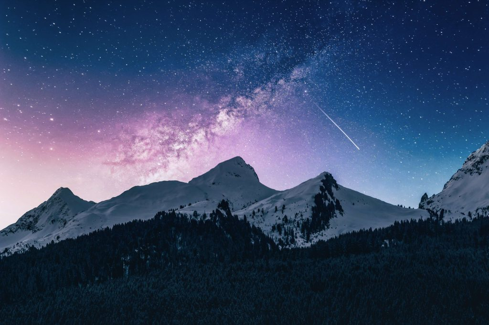
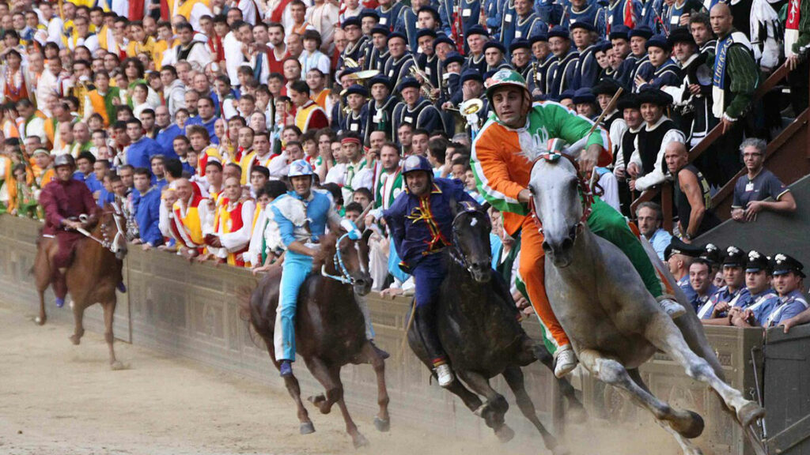
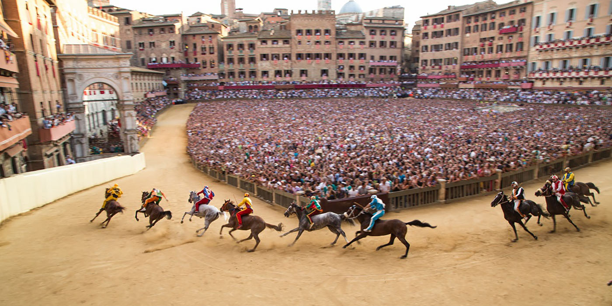

Tradiciones
Carnaval de Venecia: El Carnevale di Venezia es uno de los carnavales más conocidos del mundo, famoso por sus elegantes máscaras y trajes de época. Durante este evento, que se celebra antes de la Cuaresma, la ciudad se llena de desfiles, fiestas y eventos especiales. Las máscaras permiten a los participantes esconder su identidad y sumergirse completamente en la atmósfera festiva.
.jpg)
.jpg)
La Notte di San Lorenzo (La Noche de San Lorenzo): El 10 de agosto, en Italia, se celebra la Notte di San Lorenzo o la "Noche de las Estrellas Fugaces". En esta noche, se cree que las estrellas fugaces son los deseos de los santos, y muchas personas se reúnen al aire libre, a menudo en el campo, para observar el cielo y pedir un deseo. Es una tradición muy especial, sobre todo en las zonas rurales de Italia.
.jpg)

La Festa dei Ceri (Gubbio): Esta es una de las festividades más antiguas y emocionantes de Italia, celebrada en Gubbio, una ciudad medieval en Umbría, cada 15 de mayo en honor a San Ubaldo, el patrón de la ciudad. La tradición consiste en una carrera de ceri, grandes estructuras de madera que representan a los tres santos patrones de Gubbio (San Ubaldo, San Giorgio y San Antonio). Estas enormes estructuras, que pesan cientos de kilos, son transportadas a gran velocidad por grupos de corredores a lo largo de las empinadas calles de la ciudad. Es una fiesta de gran fervor popular, con música, desfiles y una impresionante demostración de devoción y resistencia física.
.jpg)
El Palio de Siena: Cada verano, la ciudad de Siena en la región de Toscana celebra una de las carreras más famosas de Italia, el Palio di Siena. Es una competencia entre los diferentes "contrade" (distritos) de la ciudad, donde caballos sin jinete corren alrededor de la Piazza del Campo, una plaza histórica. La carrera es muy vibrante y está llena de historia, simbolismo y rivalidades locales


Todos los derechos estan reservados 2025©